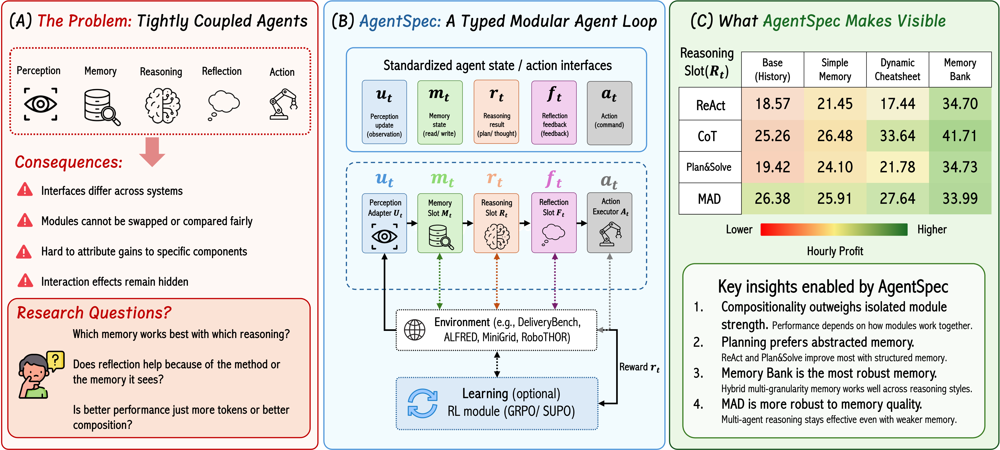
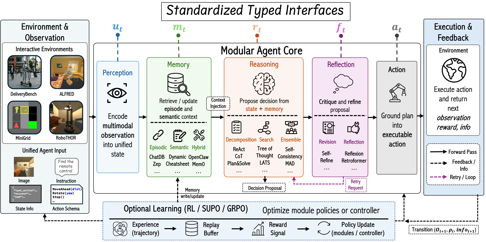
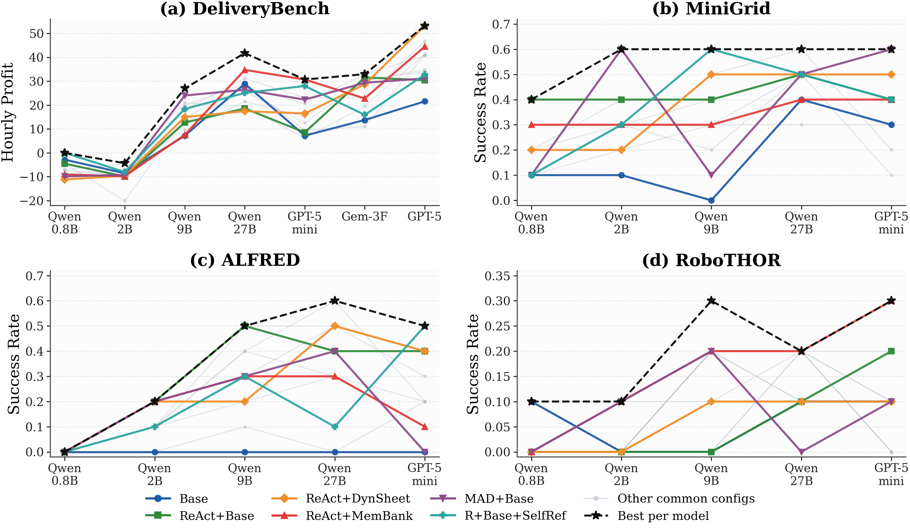
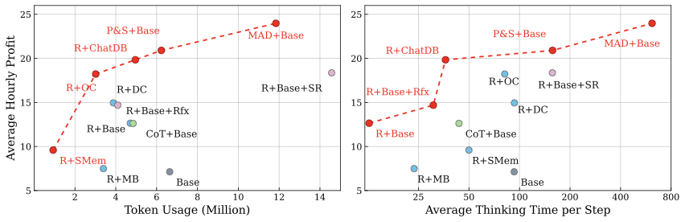
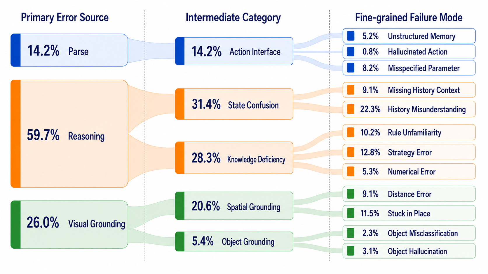
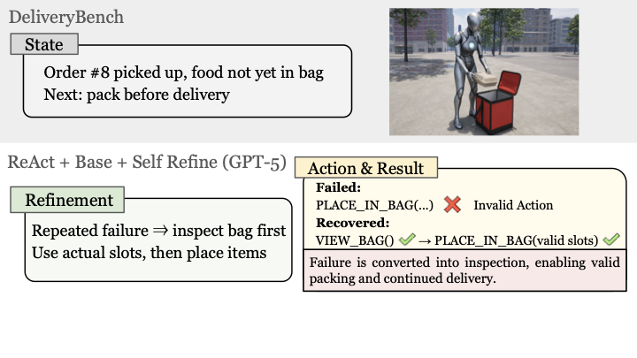
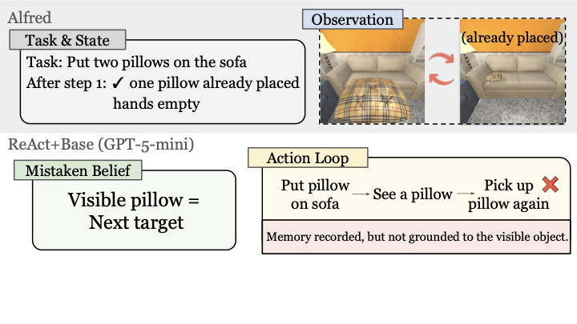

Compatibility Matters
Module strength alone is not sufficient; memory representation must match the reasoning strategy to produce gains.
1University of California, San Diego
2Johns Hopkins University
3University of Washington
4University of Illinois Urbana-Champaign
If your browser does not autoplay QuickTime streams, download and view directly: agentspec.mov.
LLM-based embodied agents are increasingly built from modules such as reasoning, memory, reflection, action execution, and learning. However, these modules are often embedded in tightly coupled pipelines, making it hard to isolate component contributions or study interaction effects. AgentSpec introduces a modular specification framework that represents embodied agents as explicit compositions of reusable policy components with standardized interfaces.
We instantiate AgentSpec across DeliveryBench, ALFRED, MiniGrid, and RoboTHOR, and run controlled studies over reasoning, memory, reflection, and reinforcement learning modules. Our experiments show that performance is jointly determined by component quality and representation compatibility. Structured multi-granularity memory improves long-horizon state tracking, reasoning and memory exhibit strong complementarity, and lightweight modular compositions can achieve stronger performance-cost trade-offs than heavier misaligned pipelines.

AgentSpec organizes policy execution into a modular Perception-Memory-Reasoning-Reflection-Action loop, with optional reinforcement learning for optimization.
This decomposition enables controlled ablations and recombination across environments without rebuilding the full agent pipeline.

Module strength alone is not sufficient; memory representation must match the reasoning strategy to produce gains.
Short symbolic tasks benefit more from per-step reasoning, while long-horizon embodied tasks are bottlenecked by state tracking.
Performance improvements do not come from token usage alone; lightweight but aligned modules often offer better trade-offs.





AgentSpec is evaluated on four embodied benchmarks with complementary challenges: DeliveryBench (long-horizon planning under constraints), ALFRED (compositional household manipulation), MiniGrid (symbolic navigation under partial observability), and RoboTHOR (realistic first-person navigation).
@article{chen2026agentspec,
title={AgentSpec: Understanding Embodied Agent Scaffolds Through Controlled Composition},
author={Chen, Jixuan and Shen, Jianzhi and Kang, Haoqiang and Hong, Zhi and Jiang, Qingyi and Bose, Soham and Zhang, Yiming and Leng, Leon and Vyas, Amit and Mao, Lingjun and Ouyang, Siru and Zhou, Kun and Qin, Lianhui},
journal={arXiv preprint arXiv:2606.14674},
year={2026},
url={https://arxiv.org/abs/2606.14674v1}
}